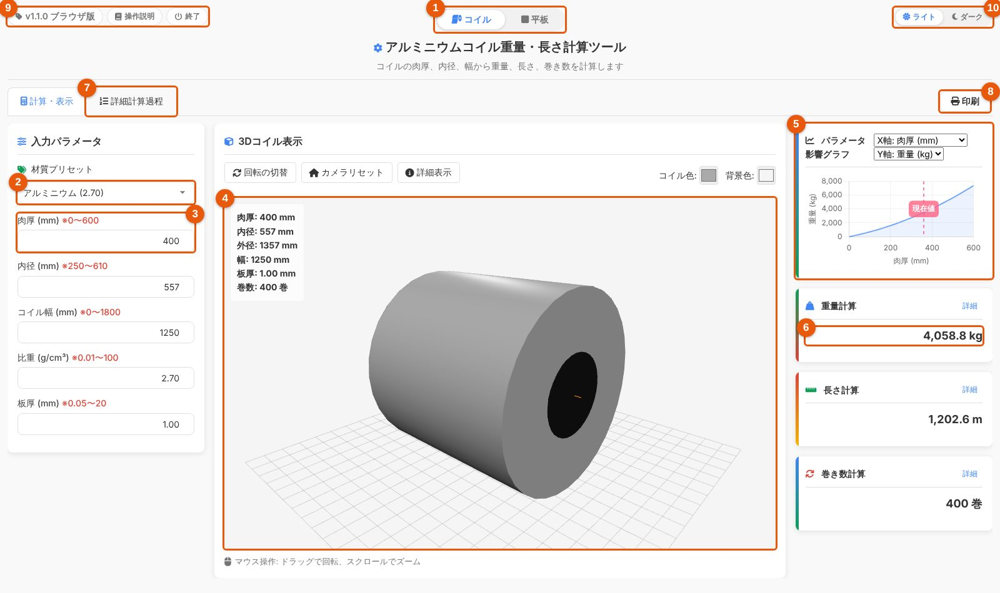
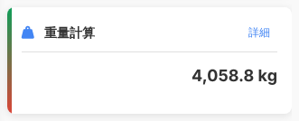
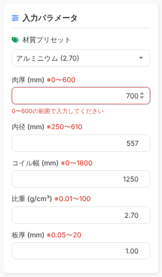
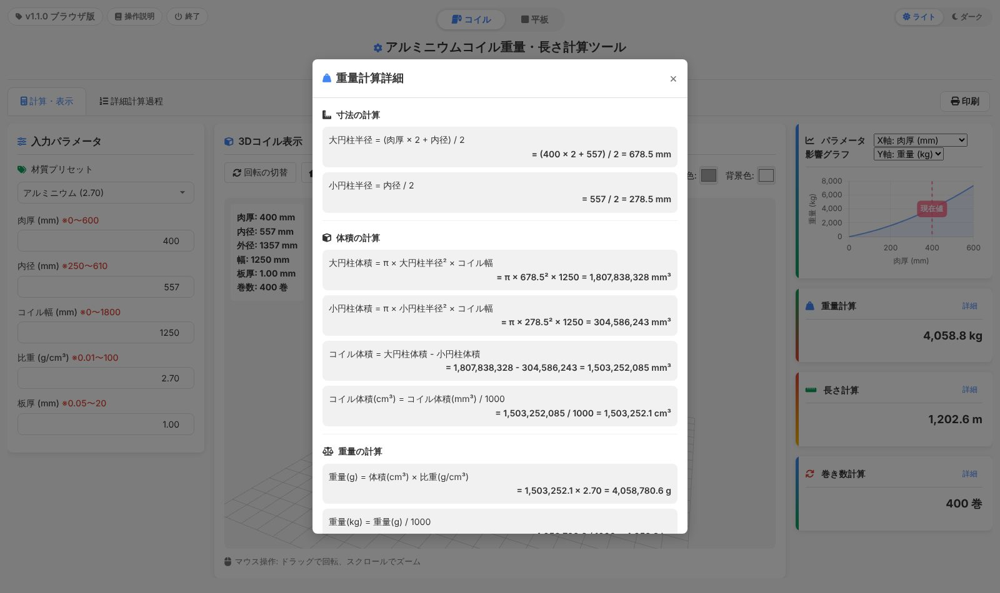
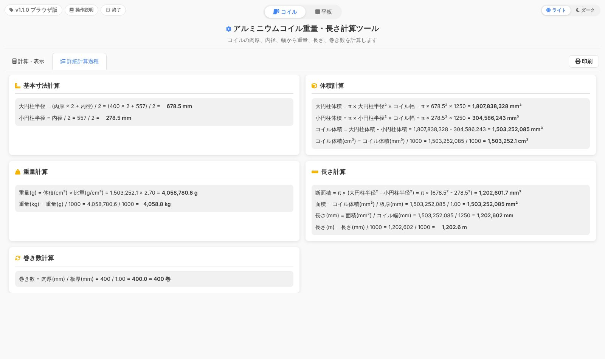
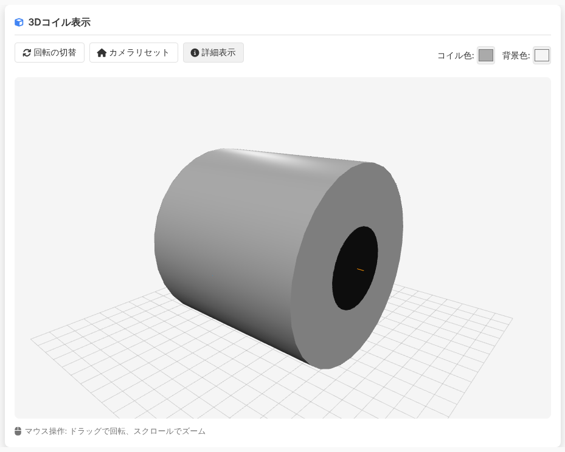
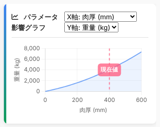
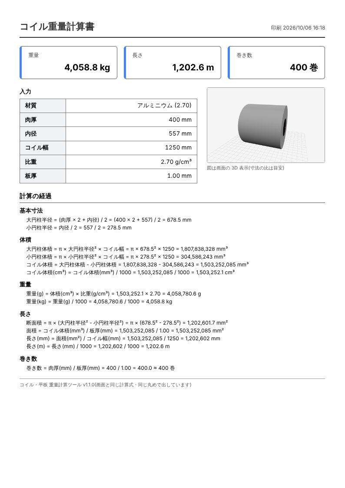

コイルの使い方
コイルの肉厚・内径・幅・比重・板厚を入れると、重量(kg)・長さ(m)・巻き数がすぐに出ます。計算ボタンはありません。数字を打つたびに計算し直します。
画面の見取り図

| 番号 | 名前 | すること |
|---|---|---|
| 1 | 形状の切替 | 「コイル」と「平板」を切り替えます。最後に見ていた方を覚えます |
| 2 | 材質プリセット | アルミニウム・鉄・銅・ステンレスから選ぶと、比重と 3D の色が変わります |
| 3 | 入力欄 | 肉厚・内径・コイル幅・比重・板厚を入れます(下にも続きます) |
| 4 | 3D の図 | 入れた寸法のコイルを立体で見せます。ドラッグで回し、ホイールで拡大・縮小します |
| 5 | パラメータ影響グラフ | 1つの値を変えると結果がどう変わるかを線で見せます |
| 6 | 結果 | 重量・長さ・巻き数。それぞれの「詳細」で計算の途中が見られます |
| 7 | 詳細計算過程 | 計算の途中をすべて並べた頁に切り替えます |
| 8 | 印刷 | 計算書(A4 縦)を印刷します |
| 9 | 版・操作説明 | いま使っている版と、この説明書(版の見方) |
| 10 | 背景の切替 | ライト / ダーク |
計算のしかた
- 2 の材質プリセットで材質を選びます。比重が自動で入ります(比重の欄に直接入れても構いません)。
- 3 の欄に肉厚・内径・コイル幅・板厚を入れます。単位はすべて mm です。
- 6 の結果を読みます。打つたびに計算し直すので、計算ボタンはありません。

肉厚とは巻いてあるコイルの、内側(内径)から外側までの厚みです。巻いた板そのものの厚みは「板厚」に入れます。
入れられる範囲
| 欄 | 範囲 | 単位 |
|---|---|---|
| 肉厚 | 0〜600 | mm |
| 内径 | 250〜610 | mm |
| コイル幅 | 0〜1800 | mm |
| 比重 | 0.01〜100 | g/cm³ |
| 板厚 | 0.05〜20 | mm |
範囲の外の値を入れたときその欄が赤くなり、下に範囲が出ます。赤い欄があるあいだは計算せず、結果は前の値のままです。「印刷」も押せません。範囲の中に直すと、すぐ計算されます。

結果と詳しい計算
結果の数字は、重量と長さが小数1桁、巻き数が整数(四捨五入)です。途中の計算を見るには2つの方法があります。
結果のカードの「詳細」

「詳細計算過程」の頁

3D の図

| 操作 | 動き |
|---|---|
| ドラッグ | 回す |
| マウスのホイール | 拡大・縮小 |
| 回転の切替 | 自動でゆっくり回す / 止める |
| カメラリセット | はじめの向き・大きさに戻す |
| 詳細表示 | 寸法の札を出す / 消す |
| コイル色・背景色 | 図の色を変える(計算には関係しません) |
図の大きさの比は目安です。寸法を変えると図もすぐ変わります。
グラフ

右上の2つの選択で、X 軸(動かす値: 肉厚・内径・コイル幅・板厚)とY 軸(見る結果: 重量・長さ・巻き数)を選びます。
ほかの欄は今の値のまま、X 軸の値だけを範囲いっぱいに動かしたときの結果が線になります。線の上にマウスを置くと、その点の値が出ます。
コイル幅を 0 にした点は長さが計算できないので、線が途切れます。
印刷
- 上の「印刷」(8)を押します。
- 印刷の画面でプリンタを選び、「印刷」を押します(用紙は A4 縦)。
計算書には、入力した値・結果・3D の図(画面の向きのまま)・計算の途中・印刷した日時と版が入ります。数字は画面と同じです。
押せないとき赤い欄(範囲の外)があると印刷できません。

計算式
大円柱半径(mm) = (肉厚 × 2 + 内径) / 2
小円柱半径(mm) = 内径 / 2
コイル体積(mm³) = π × 大円柱半径² × コイル幅 − π × 小円柱半径² × コイル幅
重量(kg) = コイル体積 / 1000 × 比重 / 1000
長さ(m) = コイル体積 / 板厚 / コイル幅 / 1000
巻き数 = 肉厚 / 板厚(整数に四捨五入)